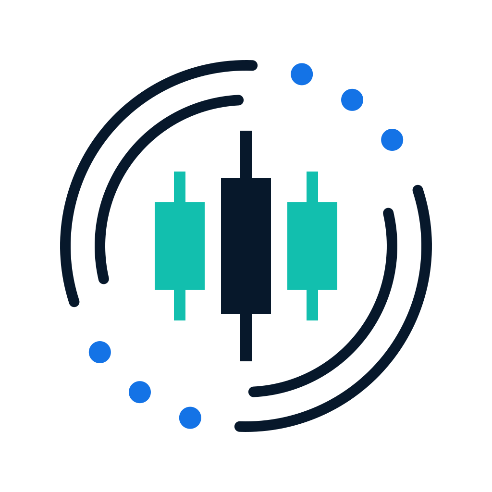

看见实时市场
查看 Binance 与 OKX 的现货和永续市场。结合实时图表、盘口、逐笔成交与订单流，理解价格变化的上下文。
实时图表 / 订单流
CandleScopeYOUR LOCAL MARKET WORKSPACE
从实时行情到历史回放，把图表、订单流与策略研究放在一起。CandleScope，为专注分析而生的本地工作台。
把市场的每个细节，
放回完整的上下文。
ONE WORKSPACE. MORE PERSPECTIVE.
让实时分析与历史研究，衔接成你的工作流。
查看 Binance 与 OKX 的现货和永续市场。结合实时图表、盘口、逐笔成交与订单流，理解价格变化的上下文。
实时图表 / 订单流回到历史行情，以同步市场和模拟账户练习。保存训练进度，复盘已有记录，或从任意节点重新开始。
历史回放 / 模拟交易在多图工作区联动观察，使用 Pine 或前端 JavaScript 编写指标，导入数据开展策略研究，检查结果与测试假设。
多图联动 / 可编程指标市场视图取决于交易所提供的数据；Pine 兼容覆盖明确支持的子集。行情回放使用模拟委托。
EXPLORE THE PROJECT
在 GitHub 查看源码、安装说明与项目进展。